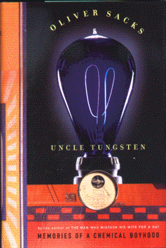

Uncle TungstenMemories of a Chemical Boyhoodby Oliver Sackspublisher: Vintage Books, Random House Non-fiction, 320 pages |  (book cover art, Copyright ©2001 Oliver Sacks) |
Follow the fascination of a young English boy for metals and for scientific experimentation.Ê Meet his truly scientific (and odd) family.Recommended for: Anyone who loved chemistry; people who like to experiment, anyone who has caused his/her family to evacuate their home because of some experiment gone awry.
Deadline: Peer Review Session on February 8, 2005; paper due February 10, 2005.
You should write a 3 - 4 page essay on one of the following questions. Your essay should include examples and references to the book, unless otherwise specified. Page number references are sufficient for citing material from the primary book. If you use outside materials, cite your sources in full. If you would rather write on a different topic, you may, but clear it with Mr. Howe or Ms. Sullivan first.
You will give a 10 minute presentation on both of the following:
Along with this presentation, you should have a graphic that will go with it. A Power Point presentation is recommended, but if you have a special idea for a something else, such as a model, an original video presentation, or a well done drawing/ painting/ sculpture/ etc., you may do so, provided it involves a similar level of effort and polish. Speak to Mr. Howe or Ms. Sullivan first if you are considering an alternate graphic format to the Power Point.